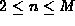
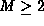
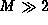
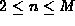
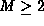
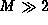

Data Structures and Algorithms
with Object-Oriented Design Patterns in Java
Data Structures and Algorithms
with Object-Oriented Design Patterns in Java
As defined in Section  ,
an internal node of an M-way search tree contains n subtrees and n-1 keys,
where , for some fixed value of .
The preceding sections give implementations for the special case
in which the fixed value of M=2 is assumed (binary search trees).
In this section,
we consider the implementation of M-way search trees
for arbitrary, larger values of .
,
an internal node of an M-way search tree contains n subtrees and n-1 keys,
where , for some fixed value of .
The preceding sections give implementations for the special case
in which the fixed value of M=2 is assumed (binary search trees).
In this section,
we consider the implementation of M-way search trees
for arbitrary, larger values of .
Why are we interested in larger values of M? Suppose we have a very large data set--so large that we cannot get it all into the main memory of the computer at the same time. In this situation we implement the search tree in secondary storage, i.e., on disk. The unique characteristics of disk-based storage vis-à-vis memory-based storage make it necessary to use larger values of M in order to implement search trees efficiently.
The typical disk access time is 1-10 ms, whereas the typical main memory access time is 10-100 ns. Thus, main memory accesses are between 10000 and 1000000 times faster than typical disk accesses. Therefore to maximize performance, it is imperative that the total number of disk accesses be minimized.
In addition, disks are block-oriented devices. Data are transfered between main memory and disk in large blocks. The typical block sizes are between 512 bytes and 4096 bytes. Consequently, it makes sense to organize the data structure to take advantage of the ability to transfer entire blocks of data efficiently.
By choosing a suitably large value for M,
we can arrange that one node of an M-way search tree
occupies an entire disk block.
If every internal node in the M-way search tree has exactly M children,
we can use Theorem to
determine the height of the tree:
where n is the number of internal nodes in the search tree.
A node in an M-way search tree that has M children
contains exactly M-1 keys.
Therefore, altogether there are K=(M-1)n keys and
Equation becomes
 .
Ideally the search tree is well balanced
and the inequality becomes an equality.
.
Ideally the search tree is well balanced
and the inequality becomes an equality.
For example, consider a search tree which contains keys. Suppose the size of a disk block is such that we can fit a node of size M=128 in it. Since each node contains at most 127 keys, at least 16513 nodes are required. In the best case, the height of the M-way search tree is only two and at most three disk accesses are required to retrieve any key! This is a significant improvement over a binary tree, the height of which is at least 20.
 Copyright © 1998 by Bruno R. Preiss, P.Eng. All rights reserved.
Copyright © 1998 by Bruno R. Preiss, P.Eng. All rights reserved.